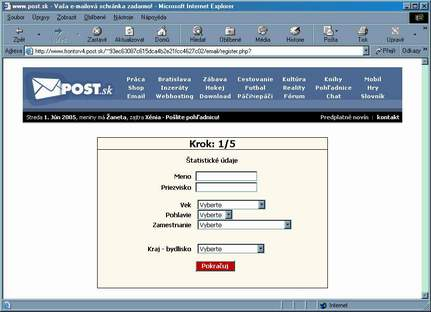
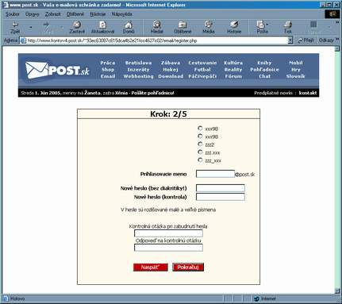
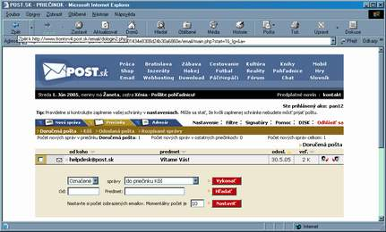

Pošta - email
- Princíp
- Užívateľ internetu si môže na niektorých počítačoch vytvoriť poštové konto, čím získa adresu a v nej schránku. Obsah tejto schránky je potom
prístupný len pre toho užívateľa a pred ostatnými je chránený heslom. Je na užívateľovi aby túto svoju adresu dal do povedomia okruhu svojich
známych, ktorí mu na túto adresu môžu zasielať elektronickú poštu.
- Čo môže byť obsahom elektronického listu
- text
- obrázky
- zvuk
- ľubovoľný súbor ako príloha
Nie je bežné zasielať mailom súbory väčšieho rozsahu - zaťažuje to sieť a príliš veľké súbory môžu spôsobiť, že mail nepríde.
- Výhody elektronickej pošty
- rýchlosť - spravidla do 1 hodiny
- prístup k pošte - užívateľ má prístup ku svojej pošte z každého miesta kde je internet.
- anonymita pošty - vhodné napr. na zoznamovanie
- Nevýhody elektronickej pošty
- presnosť adresy - pri klasickej pošte adresa "nemusí" byť úplne presná a list príde
- anonymita odosielateľa - často nevieme určiť, kto nám to píše
- Používanie e-mailu
- nájdeme server kde sa dá vytvoriť poštové konto (www.szm.sk, www.post.sk, ...)
- vytvoríme si konto (musime zadať login a password, možno aj ďalšie údaje)


- skúsime sa prihlásiť

- naučíme sa využívať možnosti poštového klienta
(najmä čítať poštu, vymazať nepotrebné správy, odpovedať na poštu, predať poštu ďalej)
(neskôr je dobré naučiť sa poštu deliť do priečinkov, vytvárať si adresáre ľudí)